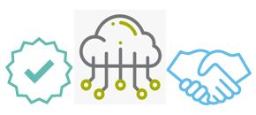

We Team Fierce aim to contribute to the creation of self-sustainable and smart cities. We fulfil this mission by offering smart intelligent lighting solutions that allow cutting down the energy and maintenance costs and creating a comfortable and safe environment for citizens.Energy efficient LED technology is enabling cities to reduce energy waste and drive with operational efficiency. We strive to achieve the lighting experience that goes beyond lighting. That includes different sensor data collection and intelligent management which leads to the good of cities and citizens. Everything we do is about data-driven smart decisions
QUALITY IOT BASED WORKER LEVEL SYSTEM SMART SYSTEM MANAGEMENT
We see street lights as one of the most valuable public assets that have a powerful role to play in making cities energy-efficient, resilient and future-ready. The traditional method of controlling street lamp lighting could not adjust the brightness of bulbs, while the management and maintenance had to rely on labour patrol. LoRaWAN technology with LED lights is an advanced controlling method for street lighting, particularly resolves the issues in monitoring and energy consumption. The system we built incorporates a levels Street Light Control, Managing Substation and Street Light Managing Centre.LoRaWAN wireless communication technologies formed the bridge of the general system, and helped achieve remote control of street lighting, monitoring and fault warning. The Smart Street Light System is just the first step towards developing a much more advanced multifunctional smart city platform. Focused on quality, reliability, and innovation, Team Fierce offers a complete solution package of controls and sensors, enabling luminaire manufacturers, utilities, and municipalities to make better use of resources, save operating costs and protect the environment by managing energy better